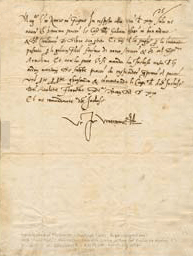

This letter was penned for the Archbishop of Florence, one of the de Medicis, on 15 May 1521, concerning 'affairs of the archdiocese'. Note the beautifully fluid hand of the calligrapher.
Back to column
